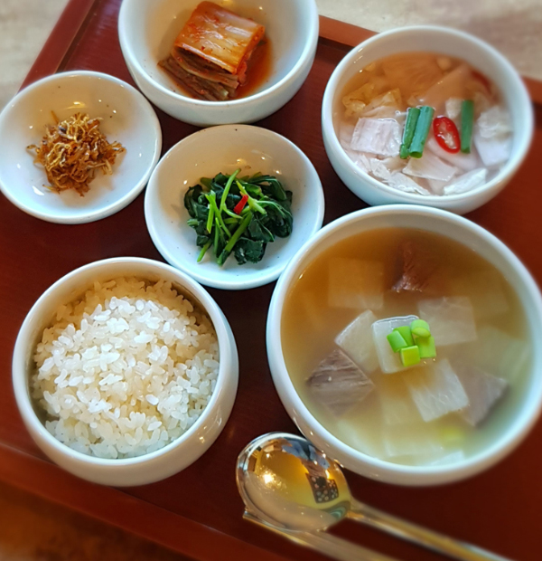

지화자 운영시간
홈
About
지화장
메뉴
예약

정조대왕의 모친인 혜경궁홍씨 회갑연의 진찬안(1795년)과 고조리서 ‘산가요록(1450년경)’, 그리고 최초의 한글요리책인 ‘음식디미방(1670년경)’에 나오는 미공개된 음식을 바탕으로 재구성한 것입니다.
매주 화요일은 정기휴일입니다.
점심
11:30 ~ 15:00 (라스트오더 13:30)
저녁
17:30 ~ 21:30 (라스트오더 20:00)
맨위로가기